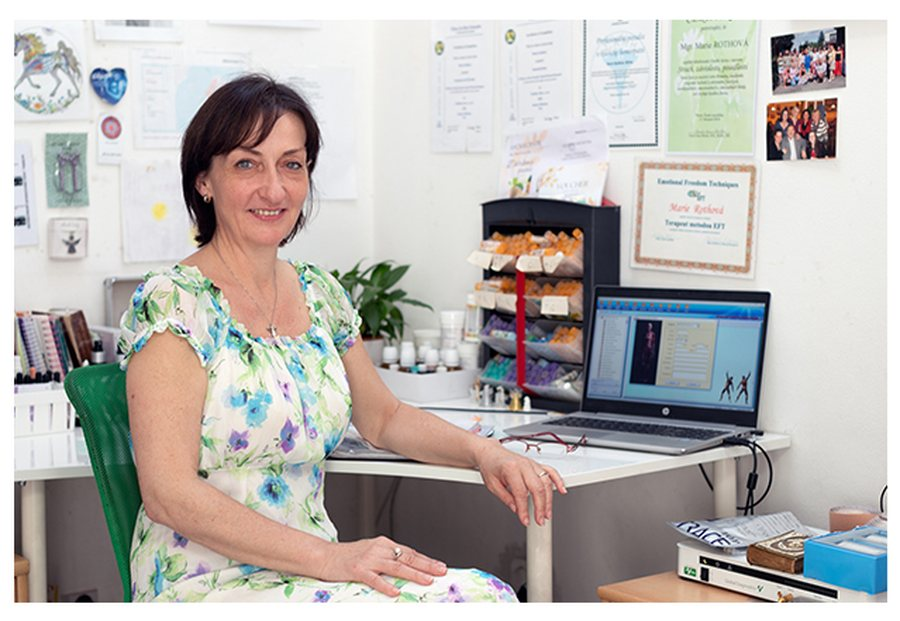
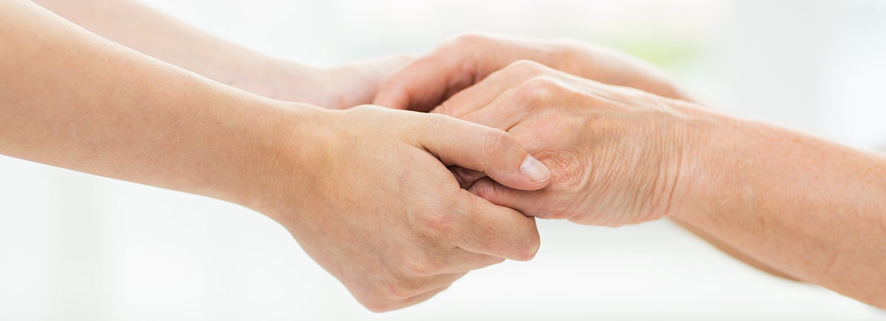

Kombinací psychoterapie, kineziologie One Brain, terapie traumatu a homeopatie pečuji o zdraví po psychické i fyzické stránce. Pomáhám dětem, dospívajícím, dospělým i celým rodinám najít cestu zpět k rovnováze.

„Kdo si dnes neudělá čas na zdraví, bude si muset později udělat čas na nemoc a omezení svého života."

Terapeutická metoda One Brain vychází z poznání, že většina našich chybných přesvědčení a negativních emocí přerušuje tok energie v lidském těle. Vznikají tak bloky, které ovlivňují naši emoční pohodu i fyzické zdraví.
Při práci na daném problému a po odstranění negativního bloku zůstávají vzpomínky i identita stejné — vymizí pouze negativní reakce a emoční bolest, která byla s problémem spojena. Výsledek je trvalý: uvažujete stále stejně, ale už bez zbytečné negace a špatných voleb.
Panická porucha, sociální fobie, generalizovaná úzkost, obsedantně-kompulzivní porucha.
Životní ztráty, truchlení, následky nehod a traumatických situací, posttraumatická stresová porucha.
Deprese, pocity beznaděje, smutku, vzteku či marnosti a jejich hlubší příčiny.
Potíže v partnerských, manželských i přátelských vztazích, nejistoty a pronásledování minulostí.
Hledání sama sebe, práce se stresem a napětím, vyčerpání, existenciální otázky.
Cigarety, alkohol, vztahy — podpora při budování nových životních návyků.
Dyslexie, dyskalkulie, dysortografie, hyperaktivita — z pohledu speciálního pedagoga.
Odblokování emocionálních příčin potíží — alergie, ekzémy, migrény a další onemocnění.
Dovednost odmítat, přijímat kritiku i pochvalu, říci si o pomoc a lépe se rozhodovat.
Zvolený přístup vždy přizpůsobuji konkrétní situaci, se kterou přicházíte — ať jde o osobní život, výchovu dětí nebo rodinné vztahy.
Individuální terapie propojená s kineziologií One Brain. Nahlédnete do skrytých vzorců svého myšlení, lépe porozumíte sobě i vztahům a dosáhnete vnitřní svobody.
Práce s traumatem se zaměřením na uvolnění blokád v energetických bodech těla — šetrně, ve vašem tempu a v bezpečném prostoru.
Hledám lék, který vás stabilizuje a harmonizuje na úrovni fyzické, emoční i mentální. Celostní metoda uznaná Českou lékařskou komorou od roku 1993.
Přístroje HBS a Global Diagnostics poskytnou komplexní přehled o kondici organismu — energetické disbalance, zátěže i nedostatky minerálů.
Žádné diety — revize návyků, díky které jdou kila dolů sama. Certifikovaný výživový poradce s podporou diagnostiky HBS.
Konstelační práce s traumatem podle výcviku u Radima Resse — pohled na hlubší souvislosti rodinného systému.
Nemůžete-li se dostavit, omluvte prosím termín co nejdříve — může ho využít jiný klient. Po předchozí telefonické domluvě je možná i online konzultace, vždy ve středu od 20:00.
Zaměřuji se na komplexní pomoc dětem, dospívajícím, dospělým a rodinám. Ke své práci využívám tři terapeutické systémy: kineziologii One Brain, terapii traumatu se zaměřením na uvolnění blokád v energetických bodech těla a integrativní psychoterapii podle Virginie Satirové. V případě potřeby je doplňuji o homeopatii, fytoterapii, nutriční poradenství či biorezonanci.
Často za mnou přicházejí klienti, kteří už absolvovali řadu sezení u psychologů, psychiatrů či v poradnách bolesti bez výraznějšího zlepšení. Propojení více přístupů umožňuje mnohdy problém zcela vyřešit, nebo ho posunout do přijatelných mezí.